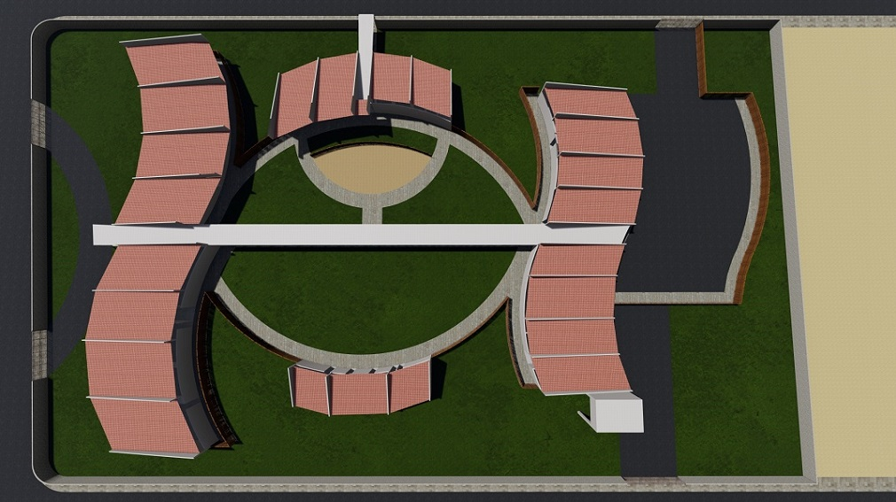
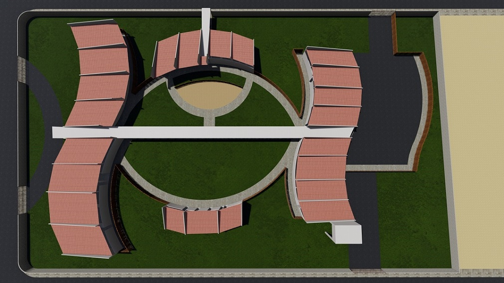

Sobre o projeto:
O espaço a ser projetado é destinado ao ensino primário de crianças com base na metodologia Waldorf, ou seja, com ambientes educacionais amplos e de fácil remanejamento de espaço, se adaptando às atividades propostas. Por se tratar de um ambiente destinado ao ensino infantil, sendo essa uma fase de desenvolvimento de percepção visual e da criatividade, procurou-se utilizar de formas orgânicas em toda a obra, à fim de tornar o ambiente mais dinâmico e interativo, aproveitando ao máximo a circulação.
 
VOLTAR

VOLTAR